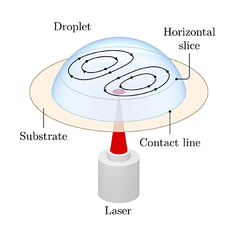
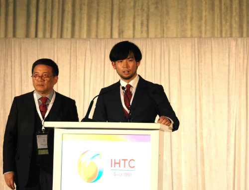
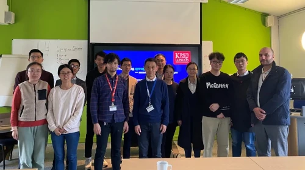
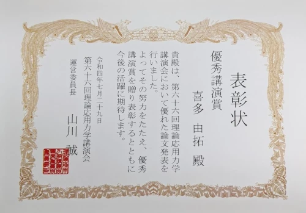
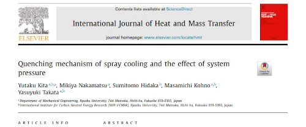
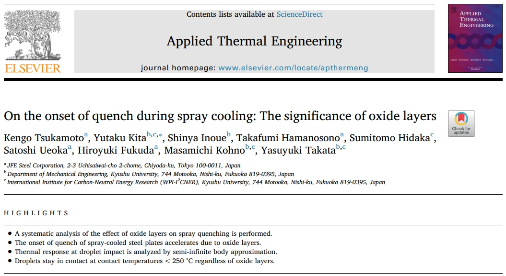
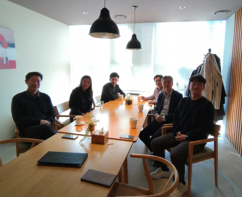
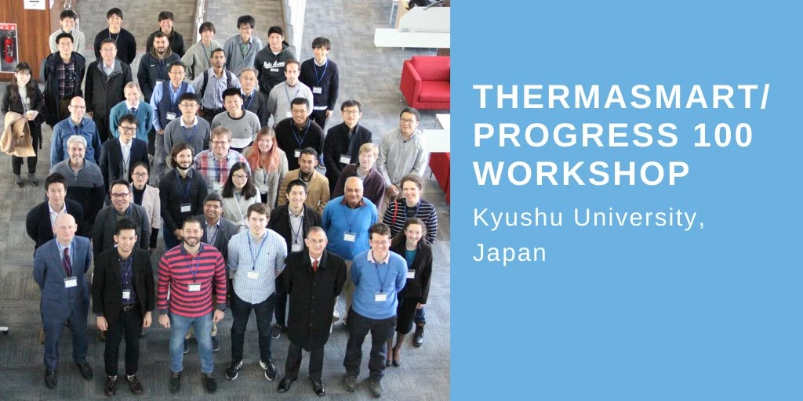

-
3 Jun 2024
Daniel joined our group!
Daniel Gibbons, our new PhD student, has joined Thermofluid Physics Group. Daniel will be working on projects related to spray cooling.
-

17 Jan 2024
New paper out in PRFluids
Our new paper titled "Flow stability in shallow droplets subject to localized heating of the bottom plate" has been publisehd in Physical Review Fluids.
-

07 Nov 2023
PhD Studentship Available Now
We are looking for a motivated PhD student to work on experiments and modelling of phase change heat trasnfer. Please see FindAPhD page. Also, we are now welcoming applications for the Faculty PhD studentship (by 22 Jan 2024) and K-CSC Programme (by 2 Jan 2024).
-

18 Aug 2023
AUTSE Award to Yutaku
Yutaku Kita (PI) received the Young Scientist Award from the Asian Union of Thermal Science and Engineering (AUTSE) and gave a Plenary Award Lecture at the 17th International Heat Transfer Conference in Cape Town.
-

05 Apr 2023
Yutaku invited to Nottingham Univ
Hosted by Prof Yuying Yan, a ThermaSMART partner, Yutaku Kita (PI) gave a seminar talk at the University of Nottingham.
-
09 Jan 2023
Yutaku joined King's
Yutaku Kita (PI) has joined Department of Engineering, King's College London as Lecturer and the PI of the Thermofluid Physics Laboratory
-

29 Jul 2023
Presentation Award to Yutaku
Yutaku Kita (PI) received the Outstanding Presentation Award from the 66th National Congress of Theoretical and Applied Mechanics.
-
25 Apr 2022
JSME Award to Yutaku
Yutaku Kita (PI) received the Young Engineers Award from the Japan Society of Mechanical Engineers (JSME).
-

22 Mar 2022
New paper out in IJHMT
Our new paper titled "Quenching mechanism of spray cooling and the effect of system pressure" has been publisehd in International Journal of Heat and Mass Transfer.
-

29 Sep 2020
Paper selected as Editor's Choice
Our recent paper titled "On the onset of quench during spray cooling: The significant of oxide layers" has been selected as Editor's Choice of Applied Thermal Engineering. See the post.
-

30 Jan 2020
Yutaku invited to KAIST
Hosted by Prof Sung Jin Kim, Yutaku Kita (PI) gave a seminar talk at Korea Advanced Institute of Science & Technology (KAIST), Daejeon, Korea.
-
16 Jan 2020
Yutaku invited to TUAT
Hosted by Prof Yoshiyuki Tagawa, Yutaku Kita (PI) gave a seminar talk at Tokyo University of Agriculture and Technology, Tokyo, Japan. See WEB.
-

04 Dec 2019
Successful ThermaSMART Workshop/ Progress 100 Symposium
Meeting on New Advances and Key Questions in Phase-Change Cooling was successfully organised by Yutaku Kita (PI) and Prof Takata at Kyushu University, Fukuoka, Japan, with ~80 experts from 10 countries (incl. Japan) and 5 continents.
-
01 Jan 2019
Yutaku joins Kyushu University
Yutaku Kita has been appointed as Assistant Professor at the Department of Mechanical Engineering, Kyushu Univeristy.
-
07 Nov 2023
PhD Studentship Available Now
We are looking for a motivated PhD student to work on experiments and modelling of phase change heat trasnfer. Please see FindAPhD page. Also, we are now welcoming applications for the Faculty PhD studentship (by 22 Jan 2024) and K-CSC Programme (by 2 Jan 2024).